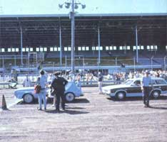
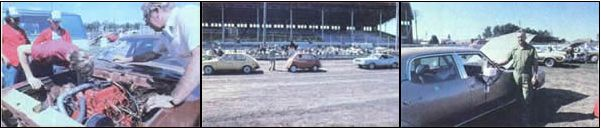

A number of inventive Midwesterners tinker to save a tankful, at the first annual
Most auto racing fans consider the Indianapolis 500 to be the high-speed motor sport event of the year, but not many car enthusiasts have even heard of the Iowa Energy 500. Well, you're about to get to know the latter event . . . because MOTHER recently sent one of her editors to the capital of the Hawkeye State to cover the "race", which was held as part of the Iowa State Fair.
As the name implies, this 500 was oriented toward energy - and its conservation - rather than toward blinding speed. The event was organized by the Iowa Energy Policy Council and the Des Moines Area Community College ... to demonstrate practical vehicle modifications used by motorists to increase the efficiency of their automobiles.
The event's promoters divided all entrants into six divisions, based on vehicle weight and the type of fuel used (gasoline or gasohol, and gasoline with additives selected by the contestant) . . . and included an open seventh class for unusually modified vehicles burning any fuel. (There was a demonstration category as well for those who couldn't qualify or didn't care to officially enter the run, but nonetheless had worthwhile hardware to display.)
Needless to say, mechanically minded tinkerers, from quite a few different states, were out in full force on the morning of the competition. All types of "stock" machines - from a 1920 Ford to a Dodge motor home - were entered, along with several more radical vehicles ... including an AMC Gremlin retrofitted with a Waukesha diesel engine that burned a fifty-fifty waste-oil/fuel-oil blend.
Perhaps most mind-boggling, however, were the many "trick" fuel-pinching devices designed by the entrants. Some people opted to use assorted types of fuel heaters to improve their MPG figures . .. while others went a step further and tried vaporizing the liquid energy. Of course, there were a number of water injectors in use - plus several different friction-reducing fuel additives - and a few shade-tree mechanics chose to merely lean out their vehicles' carburetors and advance the ignition timing slightly.
On the other hand, several of the entries were outright radical by Detroit standards: One Ford pickup burned a mixture of water and hydrogen vapor (produced by electrolysis right under the hood), a Buick sported a V-8 to V-4 conversion built directly from MOTHER's plans, and a Dodge truck seemed perfectly satisfied to function on wood smoke in lieu of traditional gasoline fuel.
The participants were each allotted 1/10 of a gallon of fuel and sent off to circle the fairgrounds race track with a judge, who monitored fuel consumption and marked the point reached when the supply was depleted. Final results varied widely, of course, but in nearly every case the drivers noted substantial improvement over the mileage their vehicles would have delivered in "stock trim" ... even on the track's packed-dirt surface, which would generally have stolen about 15% from normal economy figures.
In all, we'd say that the Iowa Energy 500 was a real success . . . not just because it proved what a little Yankee ingenuity could do to save fuel, but because it may - we hope - have encouraged more people to do likewise!
EDITOR'S NOTE: If you are interested in the V-8 to V-4 conversion mentioned here, you can refer to MOTHER NO. 58, page 144 for the changeover details . . . or turn to pages 170-171 of this issue for information about ordering the illustrated, step-by-step plans.
|
STAFF PHOTO Iowa Governor Robert D. Ray kicked off the first annual Energy 500 by dropping the green flag for the competitors in the initial heat |
 STAFF PHOTOS (from LEFT) Waverly, Iowa's Earl Mason realized a mileage increase of about 40% after he converted his V-8 Buick to a V-4, using MOTHER's plans. . . . The open class featured vehicles of all kinds, including an ethanol-powered BMW runabout sponsored by Sun-Syn Research of Chicago. . . R.F. Kuecher of Palos Hills, Illinois achieved an impressive 41.65 miles per gallon with his diesel-equipped ? and partially waste-oil burning ? AMC Gremlin. . . |
 |